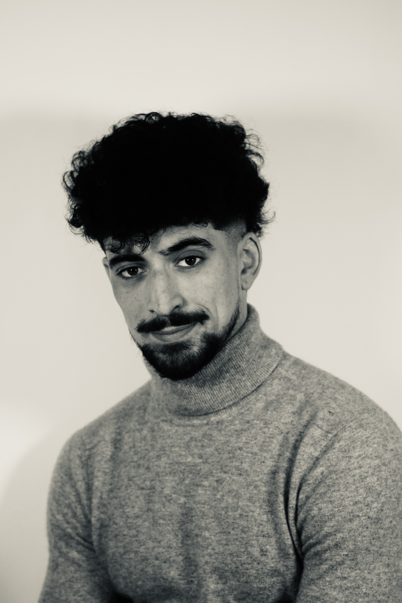
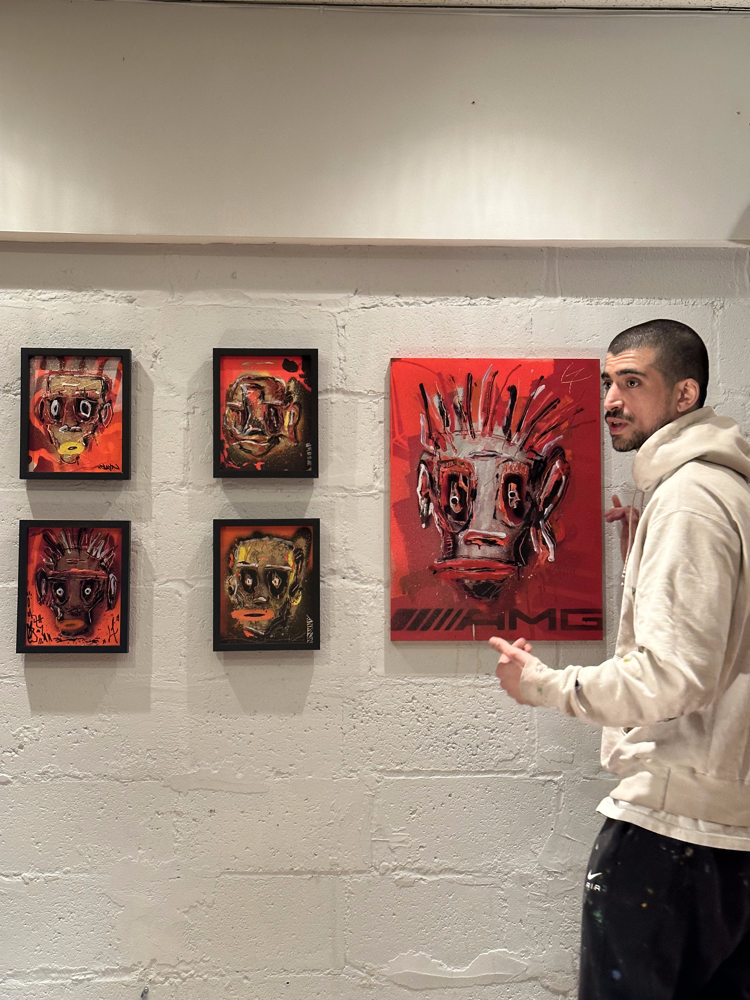
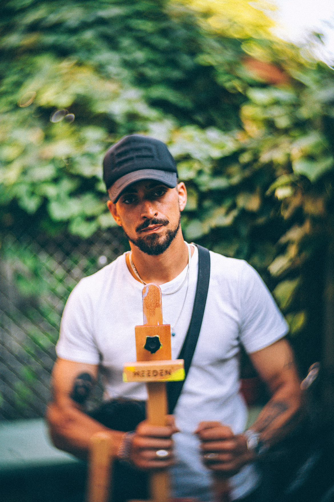
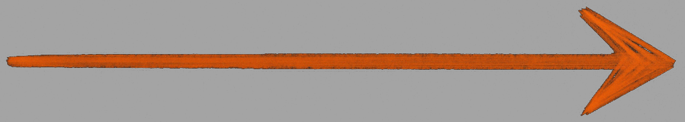

A Journey Between Art and Science
This is my bio

Arrival in Montreal
Start of Econ studies at UdeM
Discovered painting
First artistic experiments
Art exhibitions & events
Freelance creative career
Turning point
Back to data analysis
Built portfolio site
Advanced ML projects
PROFILE
My name is Yanis Nassi. I am passionate about economic analysis, art, quantitative modeling, and data technologies. My unconventional journey has taken me from academia to the world of art, and today, with renewed enthusiasm, back to data science, supported by a strong self-learning mindset and a constant drive to expand my knowledge.
ACADEMIC BACKGROUND
Originally from Brittany, I moved to Montreal in 2013 after completing preparatory classes in France focused on economics and mathematics. I pursued a B.Sc. in Economics at the University of Montreal, where I was introduced to applied statistics, econometrics, and real-world data analysis. That experience deeply shaped my approach, grounding me in a rigorous and analytical understanding of social and economic systems.
ARTISTIC PATH
Arriving in Montreal also marked the start of another journey: artistic creation. Inspired by the city’s vibrant cultural scene, I began painting in 2016 and started organizing artistic events by 2019. My works have been exhibited and sold in various independent venues. For several years, I maintained a professional artistic activity while also working part-time in finance, accounting, and event logistics.
RETURN TO DATA ANALYSIS
A major turning point in 2024 led me to reassess the long-term viability of my independent artistic career. I decided to refocus on my analytical skills and began several training programs:
- Google Data Analytics Professional Certificate — which helped me reconnect with applied data analysis.
- IBM GenAI Engineer Certificate — to deepen my skills in Python, machine learning, and AI integration.
I also started personal projects, including a full study on Bitcoin price prediction (see here), designed as a comprehensive, academically inspired case study. To host and present my work, I built this portfolio website from scratch.
GOALS
For nearly a year, I’ve been fully committed to sharpening my skills — in statistical modeling, machine learning, data pipeline automation, interactive visualization, and more.
I’m now actively seeking a concrete professional opportunity within a dynamic team, where I can contribute meaningfully, keep learning alongside experienced professionals, and apply my skills to impactful real-world projects.